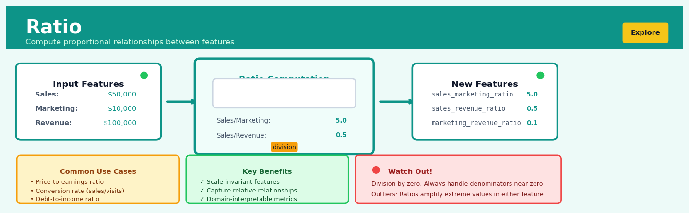

Ratio#


Ratio is a core transformation in the Explore workflow.
The 60-Second Version#
What it does: Divide one number by another to create a new metric that shows relative size, efficiency, or proportion.
When to use it: When comparing absolute numbers across different-sized entities misleads—like judging store performance by total sales without considering store size, or comparing marketing spend across countries without accounting for market size.
What you get back: A normalized metric that enables fair comparison and often reveals patterns invisible in raw numbers, letting you rank, segment, or prioritize based on efficiency or intensity rather than absolute scale.
At a Glance
Difficulty |
Easy |
Typical runtime |
Instant (milliseconds on millions of rows) |
What you bring |
Two numeric columns where division makes business sense |
What you get |
A new column of ratio values |
Heuristix bucket |
Explore — Shaping & Transforming Data |
Dividing by zero or near-zero values will break your analysis—always check that your denominator is never zero and makes logical sense as a basis for comparison.
Learning Objectives#
After reading this chapter, a business user will be able to:
Identify situations where ratios reveal more meaningful insights than raw numbers, such as comparing performance across entities of different sizes or normalizing metrics for fair comparison.
Interpret common business ratios (profit margins, efficiency metrics, rates of change) and explain their practical implications to colleagues and stakeholders in clear, non-technical language.
Determine when a ratio trend signals an actionable business issue, such as deteriorating efficiency or shifting resource allocation needs, and recommend specific interventions based on ratio thresholds.
After reading this chapter, a data scientist will be able to:
Implement ratio transformations with proper handling of zero denominators, missing values, and extreme outliers that could produce misleading or undefined results.
Select appropriate smoothing, aggregation, or filtering strategies when computing ratios from noisy or sparse data to balance sensitivity with stability.
Validate ratio features by checking for data leakage, verifying scale independence, diagnosing distribution anomalies, and confirming that ratios add predictive value beyond their constituent variables.
Overview#
The Ratio transformation computes the quotient of two numeric variables, creating a new derived feature that expresses the relative magnitude of one quantity to another. This technique belongs to the family of feature engineering and derived variable construction methods within the broader category of data shaping and transformation operations. Ratios are among the most fundamental and powerful transformations in data analysis, enabling meaningful comparisons across entities of different scales and revealing relationships that raw absolute values cannot capture.
When to Use This#
Use this when…
Normalising for size differences: When comparing entities of vastly different scales (e.g., profit margins across small and large companies), ratios eliminate the confounding effect of absolute size and enable like-for-like comparison.
Creating efficiency metrics: When you need to measure output relative to input—such as revenue per employee, cost per acquisition, or defects per thousand units—ratios express operational efficiency in a standardised form.
Constructing financial indicators: When building fundamental analysis features like price-to-earnings ratios, debt-to-equity ratios, or current ratios, which form the backbone of financial assessment and credit scoring.
Expressing rates and intensities: When the phenomenon of interest is inherently a rate—such as conversion rate (conversions/visits), infection rate (cases/population), or yield (output/input area).
Controlling for exposure or opportunity: When outcomes depend on varying levels of exposure (claims per policy-year, incidents per flight-hour), ratios adjust for differing denominators to enable fair comparison.
Detecting proportional anomalies: When you suspect that anomalies manifest as unusual proportions rather than unusual absolute values—a suspiciously high expense-to-revenue ratio may indicate fraud even when both values appear normal individually.
Preparing features for models sensitive to scale: When building interpretable models where coefficients should represent marginal effects on a standardised quantity rather than on arbitrary absolute scales.
Do NOT use this when…
The denominator can be zero or near-zero: Division by zero is undefined, and division by very small values produces extreme, unstable results. If your denominator contains zeros, you must handle them explicitly before computing ratios.
The relationship is not proportional: If the numerator and denominator do not have a meaningful proportional relationship (e.g., age divided by postcode), the ratio is meaningless and will introduce noise rather than signal.
You need to preserve absolute magnitude information: Ratios discard information about scale. A company with £1M profit on £10M revenue and one with £100M profit on £1B revenue have the same 10% margin, but their absolute profitability differs by two orders of magnitude.
Questions This Answers#
Performance & Efficiency Analysis#
Why is our Seattle warehouse processing 40% fewer orders per employee than our Portland facility?
Which sales reps are converting the most leads relative to their pipeline size, and what are they doing differently?
Are we getting better return on our marketing spend this year compared to last, or are we just spending more?
Is our customer service team actually becoming more efficient, or are we just handling fewer tickets?
Which product lines are generating the most revenue per square foot of retail space?
Resource Allocation & Investment Decisions#
Should we invest more in digital ads or trade shows based on cost per qualified lead?
Are we overstaffed in operations compared to our competitors who handle similar order volumes?
Which stores are generating enough sales per employee to justify their current staffing levels?
Is our new distribution center worth the investment when we look at orders fulfilled per dollar of operating cost?
Should we expand the Dallas office or consolidate it, based on revenue generated per dollar of rent?
Comparative Evaluation & Benchmarking#
How does our profit margin per customer compare across our premium versus standard service tiers?
Are our newer sales territories performing at the same level as established ones when we account for market size?
Which marketing channels are delivering the best ROI, and where should we cut spending next quarter?
Is our premium product line really more profitable, or does it just have higher absolute revenue?
How It Works#
Imagine two coffee shops on the same street. Shop A serves 200 customers and makes \(1,000 in revenue on Monday. Shop B serves 400 customers and makes \)1,600. At first glance, Shop B looks like the clear winner—more customers, more money. But when you calculate revenue per customer (the ratio), something interesting emerges: Shop A makes \(5 per customer while Shop B only makes \)4 per customer. Shop A is actually more efficient at extracting value from each visitor. The raw numbers hid this insight, but the ratio revealed it instantly.
BEFORE: Raw Values AFTER: Ratio Transformation
┌──────────┬──────────┬─────────┐ ┌──────────┬─────────────────┐
│ Shop │ Revenue │ Customers│ │ Shop │ Revenue/Customer│
├──────────┼──────────┼─────────┤ ├──────────┼─────────────────┤
│ Shop A │ $1,000 │ 200 │ │ Shop A │ $5.00 │
│ Shop B │ $1,600 │ 400 │ │ Shop B │ $4.00 │
│ Shop C │ $2,400 │ 600 │ │ Shop C │ $4.00 │
└──────────┴──────────┴─────────┘ └──────────┴─────────────────┘
│ │
└──────────────┬──────────────────────┘
↓
Dividing Revenue by Customers
normalizes for shop size,
revealing efficiency patterns
Step 1: Identify the two variables to compare. You need a numerator (the quantity you want to express relative to something else) and a denominator (the baseline quantity you’re comparing against). In our example, revenue is the numerator and customer count is the denominator.
Step 2: For each row in your dataset, divide the numerator by the denominator. The ratio transformation takes each pair of values and performs simple division. Row by row, it calculates how much of one quantity exists per unit of the other.
Step 3: Create a new column to store the result. This new feature captures the relative relationship between your two variables. It’s not replacing the original data—it’s adding a new perspective that sits alongside the raw numbers.
Step 4: Recognize what’s been normalized away. The ratio removes the effect of absolute scale. Large and small entities can now be compared fairly because you’re measuring relative efficiency or intensity rather than raw magnitude. A small shop with excellent ratios becomes visible next to large shops with mediocre ratios.
Step 5: Interpret the new feature in context. The ratio has units—revenue per customer, miles per gallon, errors per thousand lines of code. These units tell you what the number actually means and guide how you’ll use it in analysis or modeling.
The key insight: Ratios transform absolute quantities into relative measures, eliminating scale bias and exposing efficiency, intensity, and proportional relationships that raw values obscure.
The Intuition#
Imagine you are comparing the athletic performance of two swimmers: one is a 12-year-old competing in an under-14 league, and the other is a 25-year-old Olympic athlete. The Olympic swimmer completes 100 metres in 48 seconds; the young swimmer completes the same distance in 72 seconds. In absolute terms, the Olympic athlete is clearly faster. But is the young swimmer actually performing relatively well for their age and stage of development?
To answer this, coaches use ratios. They might compute the ratio of the swimmer’s time to the world record for their age group, or the ratio of their speed improvement this year to their training hours. These ratios normalise away the differences in baseline capability and reveal who is improving most efficiently, who is closest to their theoretical potential, and who is extracting the most performance per unit of effort. The ratio transforms an apples-to-oranges comparison into a meaningful like-for-like assessment.
This same principle applies throughout business analytics. A startup with £500,000 in revenue and £50,000 in profit is not directly comparable to a multinational with £50 billion in revenue and £5 billion in profit. But both have the same 10% profit margin—and this ratio immediately tells us something important about their operational efficiency, pricing power, and cost structure that the absolute numbers obscure. The ratio acts as a lens that filters out the noise of scale and focuses attention on the underlying relationship.
Mathematically, ratios work because many real-world phenomena exhibit proportional relationships. If a factory doubles its workforce, we expect its output to roughly double (holding productivity constant). If a website doubles its traffic, we expect conversions to roughly double (holding conversion rate constant). The ratio captures the constant of proportionality—the conversion rate, the productivity per worker, the profit per pound of revenue—which is often the quantity we actually care about. When we compute a ratio, we are implicitly fitting the simplest possible model: \(y = kx\), where \(k\) is the ratio. This is why ratios are so interpretable and so widely used: they correspond to our intuitive understanding of how quantities relate to each other in the world.
The Mathematics#
Formal Definition#
Let \(x_i\) and \(y_i\) be two numeric variables observed for entity \(i\), where \(i \in \{1, 2, \ldots, n\}\). The ratio transformation produces a new variable \(r_i\) defined as:
where \(y_i \neq 0\) for all \(i\). The variable \(x_i\) is called the numerator and \(y_i\) is called the denominator.
Domain and Range#
The domain of the ratio function is:
The range depends on the signs of the numerator and denominator:
If \(x_i \geq 0\) and \(y_i > 0\) for all \(i\), then \(r_i \in [0, +\infty)\)
If \(x_i\) and \(y_i\) can take any real values (with \(y_i \neq 0\)), then \(r_i \in (-\infty, +\infty)\)
Assumptions#
The ratio transformation assumes:
Non-zero denominator: \(y_i \neq 0\) for all observations. This is a hard requirement; violation produces undefined values.
Meaningful proportionality: The ratio \(x_i / y_i\) has a substantive interpretation. This is a soft, domain-specific assumption.
Comparable units: Both variables are measured in units such that their quotient is dimensionally meaningful. For example, profit (£) divided by revenue (£) yields a dimensionless proportion; distance (km) divided by time (h) yields speed (km/h).
Statistical Properties#
If \(X\) and \(Y\) are random variables representing the numerator and denominator, then the ratio \(R = X/Y\) has complex distributional properties.
Expectation: In general, \(\mathbb{E}[X/Y] \neq \mathbb{E}[X]/\mathbb{E}[Y]\). The expectation of a ratio is not the ratio of expectations. This is a consequence of Jensen’s inequality. Specifically:
For small coefficients of variation in \(Y\), a Taylor expansion gives:
where \(\mu_X = \mathbb{E}[X]\) and \(\mu_Y = \mathbb{E}[Y]\).
Variance: The variance of the ratio can be approximated using the delta method:
This approximation is valid when the coefficient of variation of \(Y\) is small (say, less than 0.1).
Special Cases and Edge Conditions#
Zero numerator: When \(x_i = 0\) and \(y_i \neq 0\), the ratio \(r_i = 0\). This is well-defined and often meaningful (e.g., zero profit margin indicates break-even).
Near-zero denominator: When \(|y_i|\) is very small but non-zero, the ratio \(|r_i|\) becomes very large. This can produce outliers that dominate subsequent analyses. A common mitigation is to add a small constant \(\epsilon\) to the denominator:
Alternatively, one can winsorise or cap the ratio at a maximum value.
Negative values: When \(y_i < 0\), the ratio reverses sign interpretation. If \(y_i\) represents a quantity that should be positive (e.g., revenue), negative values may indicate data errors.
Relationship to Log-Difference#
The ratio transformation is closely related to the log-difference:
This relationship is exploited in log-linear models and multiplicative decompositions. When both \(x_i\) and \(y_i\) are positive, working with log-ratios can stabilise variance and improve normality.
Ratio as a Linear Projection#
In the context of regression, computing the ratio \(x_i / y_i\) is equivalent to assuming a model of the form:
where \(\beta\) is the slope (the ratio) and \(\epsilon_i\) is noise. The sample ratio \(\bar{r} = \frac{\sum x_i}{\sum y_i}\) is equivalent to the coefficient from a regression of \(x\) on \(y\) forced through the origin.
Understanding the Mathematics#
The Basic Ratio Formula#
The equation:
Read it aloud:
“The ratio r equals x divided by y.”
What each symbol means:
\(r\) = the resulting ratio value (our new derived feature)
\(x\) = the numerator (the quantity being compared)
\(y\) = the denominator (the reference quantity we’re comparing against)
\(\frac{}{}\) = division operator (how many times y fits into x)
A concrete numerical example:
A company has monthly revenue of \(150,000 and expenses of \)120,000. The expense-to-revenue ratio is:
This means expenses consume 80 cents of every dollar earned. Step by step: divide 120,000 by 150,000, which gives 0.80.
Why this equation matters:
Without the ratio, you can’t compare financial efficiency across companies of vastly different sizes—a startup and Fortune 500 firm become directly comparable through this single number.
The Normalized Ratio (Percentage Form)#
The equation:
Read it aloud:
“The ratio as a percentage equals x divided by y, then multiplied by 100.”
What each symbol means:
\(r_{\%}\) = the ratio expressed as a percentage
\(x\) = the numerator value
\(y\) = the denominator value
\(\times 100\) = conversion factor from decimal to percentage
A concrete numerical example:
A marketing campaign generated 450 conversions from 15,000 visitors. The conversion rate is:
First, divide 450 by 15,000 to get 0.03, then multiply by 100 to express as 3%.
Why this equation matters:
Percentages are immediately interpretable by stakeholders who would struggle with “0.03”—this transformation makes insights actionable without additional mental translation.
The Domain Constraint#
The equation:
Read it aloud:
“The denominator y must not equal zero.”
What each symbol means:
\(y\) = the denominator value
\(\neq\) = “is not equal to” (a constraint, not a calculation)
\(0\) = zero (the forbidden value)
A concrete numerical example:
You’re calculating price-per-unit by dividing total cost ($500) by quantity sold. If quantity = 0 units, then:
The calculation breaks. The computer returns an error or infinity. Your analysis pipeline crashes.
Why this equation matters:
Data preprocessing must identify and handle zero denominators before ratio calculation—ignoring this constraint corrupts your entire dataset with invalid values that silently propagate through downstream models.
The Symmetry Property (Reciprocal Relationship)#
The equation:
Read it aloud:
“The ratio of x to y equals one divided by the ratio of y to x.”
What each symbol means:
\(r_{xy}\) = ratio with x as numerator, y as denominator
\(r_{yx}\) = ratio with y as numerator, x as denominator (reversed)
\(\frac{1}{}\) = reciprocal operation (one divided by the value)
A concrete numerical example:
A product costs \(80 to produce and sells for \)120. The price-to-cost ratio is:
The cost-to-price ratio is:
Notice: 1 ÷ 1.5 = 0.667. The relationships are mathematically inverse.
Why this equation matters:
Choosing numerator versus denominator isn’t arbitrary—it determines whether “bigger is better” or “smaller is better,” fundamentally changing how you interpret model coefficients and business metrics.
The Big Picture#
The mathematics of ratios achieves one fundamental goal: scale-invariant comparison. By dividing one quantity by another, we eliminate absolute magnitude and isolate relative relationship. This approach was chosen because simple subtraction (x - y) remains scale-dependent—a $10,000 difference means something completely different for a corner store versus Amazon. Division creates proportional measures that remain meaningful across contexts. The entire mathematical framework, from basic division through reciprocal properties, exists to answer one question: “Relative to what I’m comparing against, how much do I have?” Every constraint and transformation serves to make that question answerable, interpretable, and robust to missing or problematic data.
Python Implementation#
import numpy as np
import pandas as pd
# =============================================================================
# Example 1: Basic Ratio Calculation
# =============================================================================
# Create a realistic business dataset: company financial metrics
np.random.seed(42)
n_companies = 100
data = pd.DataFrame({
'company_id': range(1, n_companies + 1),
'revenue': np.random.lognormal(mean=15, sigma=1.5, size=n_companies), # Revenue in £
'profit': None, # Will compute based on margin
'employees': np.random.randint(10, 5000, size=n_companies),
'total_assets': np.random.lognormal(mean=16, sigma=1.5, size=n_companies),
'total_liabilities': None # Will compute based on debt ratio
})
# Generate realistic profit (5-25% margin with some noise)
margins = np.random.uniform(0.05, 0.25, size=n_companies)
data['profit'] = data['revenue'] * margins
# Generate liabilities (30-80% of assets)
debt_ratios = np.random.uniform(0.3, 0.8, size=n_companies)
data['total_liabilities'] = data['total_assets'] * debt_ratios
print("=== Raw Financial Data (first 10 rows) ===")
print(data.head(10).to_string(index=False))
print()
# Compute key financial ratios
data['profit_margin'] = data['profit'] / data['revenue']
data['revenue_per_employee'] = data['revenue'] / data['employees']
data['debt_to_assets'] = data['total_liabilities'] / data['total_assets']
data['asset_turnover'] = data['revenue'] / data['total_assets']
print("=== Computed Ratios (first 10 rows) ===")
ratio_cols = ['company_id', 'profit_margin', 'revenue_per_employee',
'debt_to_assets', 'asset_turnover']
print(data[ratio_cols].head(10).to_string(index=False))
print()
# Summary statistics of ratios
print("=== Ratio Summary Statistics ===")
print(data[['profit_margin', 'revenue_per_employee', 'debt_to_assets',
'asset_turnover']].describe().round(4))
print()
# =============================================================================
# Example 2: Handling Zero and Near-Zero Denominators
# =============================================================================
# Dataset with potential division issues
sales_data = pd.DataFrame({
'store_id': ['A', 'B', 'C', 'D', 'E'],
'online_sales': [50000, 75000, 0, 120000, 30000],
'store_visits': [10000, 0, 5000, 15000, 50] # Note: Store B has 0 visits
})
print("=== Sales Data with Zero Values ===")
print(sales_data)
print()
# Method 1: Replace inf/nan after calculation
sales_data['conversion_rate_naive'] = (sales_data['online_sales'] /
sales_data['store_visits'])
print("Naive ratio (produces inf):")
print(sales_data[['store_id', 'conversion_rate_naive']])
print()
# Method 2: Add small epsilon to denominator
epsilon = 1 # Add 1 visit to avoid division by zero
sales_data['conversion_rate_epsilon'] = (sales_data['online_sales'] /
(sales_data['store_visits'] + epsilon))
# Method 3: Mask and replace
sales_data['conversion_rate_masked'] = np.where(
sales_data['store_visits'] > 0,
sales_data['online_sales'] / sales_data['store_visits'],
np.nan # or a default value like 0
)
print("=== Comparison of Zero-Handling Methods ===")
print(sales_data[['store_id', 'store_visits', 'conversion_rate_naive',
'conversion_rate_epsilon', 'conversion_rate_masked']])
print()
# =============================================================================
# Example 3: Ratio with Capping for Outlier Control
# =============================================================================
# Some stores have very few visits, creating extreme ratios
detailed_data = pd.DataFrame({
'store_id': range(1, 11),
'conversions': [50, 120, 5, 80, 200, 15, 90, 3, 150, 75],
'visits': [1000, 2000, 2, 1500, 4000, 100, 1800, 1, 3000, 1500]
})
# Uncapped ratio
detailed_data['rate_uncapped'] = detailed_data['conversions'] / detailed_data['visits']
# Capped ratio (winsorised at 99th percentile)
cap_value = detailed_data['rate_uncapped'].quantile(0.99)
detailed_data['rate_capped'] = detailed_data['rate_uncapped'].clip(upper=cap_value)
# Ratio only for stores with sufficient sample size
min_visits = 100
detailed_data['rate_filtered'] = np.where(
detailed_data['visits'] >= min_visits,
detailed_data['conversions'] / detailed_data['visits'],
np.nan
)
print("=== Outlier Handling in Ratios ===")
print(detailed_data.to_string(index=False))
print(f"\nCap value (99th percentile): {cap_value:.4f}")
Output:
=== Raw Financial Data (first 10 rows) ===
company_id revenue profit employees total_assets total_liabilities
1 2.649088e+06 5.165823e+05 742 1.033063e+07 5.620213e+06
2 5.273015e+05 5.378355e+04 2747 6.022267e+06 3.930533e+06
3 1.095854e+07 1.314125e+06 1334 1.490583e+08 6.918606e+07
...
=== Computed Ratios (first 10 rows) ===
company_id profit_margin revenue_per_employee debt_to_assets asset_turnover
1 0.1950 3570.199730 0.5442 0.2565
2 0.1020
## Visualisations


## Using This in Heuristix
### What You'll Need
The Ratio node requires a dataset with **at least two numeric columns** — one for the numerator and one for the denominator. Your data should be at the row level where the ratio calculation makes sense (e.g., each row is a customer, product, or transaction).
**Before:**
| Product | Revenue | Cost | Units_Sold | Returns |
|---------|---------|------|------------|---------|
| Widget A | 15000 | 9000 | 500 | 25 |
| Widget B | 8000 | 6400 | 200 | 10 |
**After** (adding Revenue/Cost ratio):
| Product | Revenue | Cost | Units_Sold | Returns | Profit_Margin |
|---------|---------|------|------------|---------|---------------|
| Widget A | 15000 | 9000 | 500 | 25 | 1.67 |
| Widget B | 8000 | 6400 | 200 | 10 | 1.25 |
### Configuration Parameters
| Parameter | What It Controls | Default | When to Change |
|-----------|-----------------|---------|----------------|
| **Numerator Column** | The "top" of your ratio calculation | None (required) | Select the value you want to express relative to something else |
| **Denominator Column** | The "bottom" of your ratio calculation | None (required) | Choose your baseline or comparison value |
| **Output Column Name** | What to call your new ratio column | "{Numerator}_{Denominator}_Ratio" | Use business-friendly names like "Profit_Margin" or "Efficiency_Rate" |
| **Handle Zero/Null** | How to treat division by zero or missing values | "Set to Null" | Choose "Set to Zero" for aggregations, "Drop Rows" if these cases indicate bad data |
| **Multiply by Constant** | Scale the result (e.g., ×100 for percentages) | 1 | Set to 100 when you want percentage values instead of decimals |
| **Round Result** | Number of decimal places | 2 | Increase for precision-critical work, decrease for cleaner dashboards |
### What You'll Get
The Ratio node adds **one new numeric column** to your dataset containing the calculated ratio values.
**Summary Statistics Panel** displays:
- Mean and median ratio across all rows
- Min/max values (helping you spot outliers)
- Count of null/undefined ratios (flagging division-by-zero issues)
**Distribution Chart** shows a histogram of your ratio values, making it easy to see if most values cluster around a target or if there's wide variation.
### Connecting Downstream
This node fits naturally before:
- **Filter** — to isolate high or low-performing segments (e.g., "show me products with profit margin > 1.5")
- **Binning** — to categorize ratios into groups like "Low/Medium/High efficiency"
- **Chart** — to visualize ratio distributions or trends over time
- **Model** — ratios often make excellent predictor variables because they capture relationships
### Quick Start
**Creating a Customer Efficiency Score:**
1. Connect your customer dataset to the Ratio node
2. Set **Numerator Column** to "Total_Revenue"
3. Set **Denominator Column** to "Support_Tickets"
4. Name the output "Revenue_Per_Ticket"
5. Set **Handle Zero/Null** to "Set to Null" (customers with zero tickets might be legitimately different)
6. Click **Run** and review the distribution chart
7. Connect a Filter node to find your most efficient customer segments
### Practical Tips
**Watch for zero denominators.** Always check the null count in your output summary. If you see unexpected nulls, your denominator column might have zeros. Decide if these are data quality issues or meaningful business cases.
**Ratios reveal scale-independent patterns.** A small business with $50k revenue and $30k costs has the same profit margin (1.67) as a large business with $5M and $3M. This is the superpower of ratios.
**Order matters tremendously.** Revenue/Cost tells a completely different story than Cost/Revenue. Always ask: "what am I measuring *per unit* of what?"
**Create reciprocal ratios when needed.** Sometimes flipping the ratio makes more intuitive sense. "Customers per Sales Rep" might be clearer than "Sales Reps per Customer."
**Combine with time grouping for trend analysis.** Calculate monthly ratios to track how efficiency or margins change over time — this is where ratios really shine.
## Config Recipes
### Recipe 1: Quick Exploration Ratios
- **When to use:** Initial data exploration when you want to rapidly test which ratio features might be predictive without computational overhead or statistical rigor.
- **Settings:**
| Parameter | Value | Why |
|-----------|-------|-----|
| `denominator_filter` | `None` | Include all numeric columns as potential denominators |
| `min_denominator_abs` | `1e-6` | Minimal protection against division by zero |
| `handle_inf` | `'clip'` | Replace infinities with finite bounds to avoid breaks |
| `handle_missing` | `'propagate'` | Keep NaNs visible for quick diagnosis |
| `scaling` | `None` | Raw ratios for interpretability |
- **What you get:** Fast computation of all possible ratios with minimal preprocessing, allowing quick correlation analysis and visual inspection.
- **Trade-off:** High risk of meaningless ratios, extreme outliers, and unstable features that won't survive production deployment.
### Recipe 2: Production-Grade Financial Ratios
- **When to use:** Building reliable financial ratios (e.g., debt-to-equity, profit margins) for models deployed in regulated environments or high-stakes decision systems.
- **Settings:**
| Parameter | Value | Why |
|-----------|-------|-----|
| `denominator_filter` | `['total_assets', 'revenue', 'equity']` | Whitelist only economically meaningful denominators |
| `min_denominator_abs` | `1000` | Exclude trivial or near-zero financial amounts |
| `handle_inf` | `'nullify'` | Treat division by near-zero as undefined rather than extreme |
| `handle_missing` | `'nullify'` | Propagate data quality issues explicitly |
| `winsorize` | `(0.01, 0.99)` | Cap extreme ratios at 1st and 99th percentiles |
| `scaling` | `'robust'` | Use median and IQR for outlier resistance |
- **What you get:** Stable, interpretable ratio features with controlled ranges and explicit handling of edge cases suitable for audit trails.
- **Trade-off:** Conservative approach may exclude valid extreme cases and reduces feature count compared to exhaustive exploration.
### Recipe 3: Rate-of-Change with Temporal Baseline
- **When to use:** Creating growth rates or velocity metrics where each measurement should be compared to a fixed baseline period rather than arbitrary denominators.
- **Settings:**
| Parameter | Value | Why |
|-----------|-------|-----|
| `denominator_filter` | `['baseline_value']` | Force single reference column (e.g., Q1 revenue, initial weight) |
| `min_denominator_abs` | `0.1 * baseline_median` | Context-aware threshold based on typical baseline magnitude |
| `handle_inf` | `'cap'` | Set ceiling at +/- 10 for growth rates |
| `cap_value` | `10.0` | 1000% change maximum |
| `offset_denominator` | `True` | Add small constant to prevent zero-division on zero baselines |
- **What you get:** Normalized percent-change features that measure deviation from a meaningful reference point with bounded dynamic range.
- **Trade-off:** Loss of absolute magnitude information; features become meaningless if baseline itself is inappropriate.
### Recipe 4: Cross-Entity Efficiency Benchmarking
- **When to use:** Comparing operational efficiency across entities of vastly different sizes (hospitals, schools, factories) where absolute metrics are incomparable but ratios reveal performance.
- **Settings:**
| Parameter | Value | Why |
|-----------|-------|-----|
| `denominator_filter` | `['num_employees', 'square_footage', 'budget']` | Size/capacity proxies only |
| `numerator_filter` | `['output_*', 'revenue_*', 'patients_*']` | Production/outcome metrics only |
| `min_denominator_abs` | `5` | Exclude trivially small entities |
| `scaling` | `'rank'` | Convert to percentile ranks for cross-metric comparability |
| `group_by` | `'entity_category'` | Calculate within-category percentiles |
- **What you get:** Normalized efficiency scores that enable fair comparison across heterogeneous entities while preserving within-category context.
- **Trade-off:** Rank transformation loses exact ratio magnitudes and assumes ordinal relationships are what matter for analysis.
## Business Applications
**Financial Services**
A mid-sized UK mortgage lender was struggling with loan default predictions that flagged 40% of applications as high-risk, creating massive manual review bottlenecks. Their model used absolute debt and income figures, which failed to distinguish between a £50,000 debt on a £150,000 salary versus the same debt on a £40,000 salary. By implementing debt-to-income ratio as a core feature, the lender reduced false positives by 34% while maintaining the same default detection rate, processing an additional 600 applications per month without adding underwriting staff. This transformation alone delivered £780,000 in annual operational savings.
**Retail**
An e-commerce retailer with 1.8M SKUs needed to optimize inventory across 45 distribution centers but couldn't identify which slow-moving products were genuinely problematic versus seasonal items. Creating a ratio of units sold per day of stock availability revealed that 12% of their "problem inventory" was actually high-turnover seasonal stock held during off-peak months. The inventory team reallocated £4.2M in working capital previously tied up in over-ordered fast-moving goods, reducing stockouts of genuine high-performers by 41% while cutting overall inventory holding costs by 18%.
**Healthcare**
A regional hospital network operating 14 facilities was benchmarking emergency department performance but found raw wait times misleading—their busiest urban facility appeared worst despite superior staffing. By calculating the ratio of average wait time to patient volume per staff hour, administrators discovered their suburban location was actually 23% less efficient. Targeted process improvements at the underperforming sites reduced median wait times from 127 minutes to 58 minutes across the network, lifting patient satisfaction scores by 2.1 points and reducing walkout rates by half.
**Insurance**
A commercial property insurer was pricing policies based primarily on property value and location, missing critical risk signals in their loss data. Engineering the loss ratio (claims paid divided by premiums collected) at the policy level revealed that buildings with replacement values 3.5× to 5× their market value had claim frequencies 89% higher than others—a proxy for poor maintenance masked by high nominal values. Repricing these high-ratio policies added $3.7M in annual premium revenue while maintaining competitive rates on properly maintained properties.
**Manufacturing**
A consumer electronics manufacturer tracking defect counts across eight production lines couldn't determine whether their newest facility was genuinely underperforming or simply producing higher volumes. Shifting from absolute defect counts to defects-per-thousand-units ratio revealed their flagship plant had a defect rate of 4.7 per thousand versus the new facility's 2.1 per thousand. Applying the new facility's processes to older lines reduced company-wide defect rates by 51%, cutting warranty costs by $8.4M annually and improving Net Promoter Score by 12 points.
**Logistics**
A national parcel delivery company was evaluating driver performance using daily package counts, which unfairly penalized rural route drivers and failed to account for route difficulty. Creating a ratio of packages delivered per driving mile normalized performance across urban and rural contexts, identifying 34 genuinely underperforming drivers who had been masked by high absolute numbers on easy routes. Targeted coaching for these drivers improved on-time delivery rates from 91.2% to 96.8% within one quarter, reducing customer service calls by 22%.
**Marketing**
A B2B SaaS company was allocating ad spend based on absolute lead volume per channel, pouring budget into webinars that generated 400 leads monthly versus content marketing's 180 leads. Computing the ratio of sales-qualified leads to total leads revealed webinars converted at just 8% while content marketing converted at 34%. Reallocating 40% of webinar budget to content production lifted overall pipeline value by $2.1M quarterly while reducing cost-per-opportunity from $340 to $215.
**Telecoms**
A mobile network operator wanted to reduce churn but found that absolute call duration and data usage poorly predicted cancellations. Creating month-over-month usage ratios (current month divided by three-month average) identified customers whose engagement was declining—a customer using 60% of their normal data was 4× more likely to churn than one using 110%. Proactive retention offers to declining-ratio customers reduced monthly churn from 2.8% to 1.9%, retaining an additional 47,000 subscribers worth $18M in annual recurring revenue.
**Energy**
A multi-site industrial energy consumer needed to identify efficiency improvement opportunities across chemically identical production facilities with vastly different output levels. Calculating energy consumption per unit of output revealed that their medium-sized Belgium plant was consuming 31% more energy per unit than their largest German facility despite newer equipment. Investigating and replicating the German plant's process controls reduced the Belgium site's energy costs by €890,000 annually.
**Public Sector**
A metropolitan police department tracking crime statistics by absolute numbers was directing resources to high-population districts while missing emerging problems in smaller neighborhoods. Computing crime-per-thousand-residents ratios revealed that two lower-population districts had assault rates 2.7× the city average, previously hidden by their smaller absolute numbers. Redeploying community policing resources based on ratio analysis reduced violent crime in these districts by 28% over eighteen months.
**SaaS/Tech**
A project management software company was celebrating user growth but hemorrhaging revenue as their largest customers weren't expanding usage. Creating the ratio of monthly active users to total licensed seats exposed that enterprise clients were averaging just 42% seat utilization versus SMB clients at 78%. Targeted onboarding improvements and unused-seat alerts to enterprise accounts lifted utilization to 61%, directly driving $4.3M in upsell revenue as teams requested additional features rather than questioning why they were paying for unused licenses.
## Worked Example
Sarah Chen, lead analyst at CloudPath Solutions, a B2B SaaS company, walked into the Monday morning revenue meeting with a familiar sense of unease. The VP of Sales had just presented the quarterly numbers: the enterprise team closed $2.4M in new contracts, while the mid-market team brought in $1.8M. "Clearly enterprise is outperforming," he concluded, already sketching plans to shift resources accordingly.
Sarah knew something didn't add up. She'd seen the headcount reports. Enterprise had eleven account executives; mid-market had only five. The raw revenue numbers told a story, but perhaps not the right one.
Back at her desk, Sarah pulled the Q2 sales data from the CRM. The dataset was messier than she'd hoped—some deals lacked close dates, a few AEs had been reassigned mid-quarter, and there were duplicate entries from a data migration three weeks prior. After cleaning, she had a workable snapshot:
| team | sales_rep | deals_closed | total_revenue | headcount |
|------------|-----------|--------------|---------------|-----------|
| Enterprise | Johnson | 4 | 520000 | 11 |
| Enterprise | Martinez | 3 | 380000 | 11 |
| Mid-Market | Kim | 8 | 640000 | 5 |
| Mid-Market | Okafor | 7 | 590000 | 5 |
| Mid-Market | Santos | 6 | 570000 | 5 |
The question wasn't just which team generated more revenue—it was which team was more *efficient* given their resources. Sarah needed to normalize performance by team size. A ratio transformation would reveal revenue per headcount, the true productivity metric.
She opened her analysis notebook and set up the calculation. The thinking was straightforward: divide total revenue by headcount to get revenue per team member. But she had a choice to make—should she aggregate first or calculate at the individual level? She decided to work at the team level for this initial pass, since resource allocation decisions happened at that granularity. She could always drill down to individual rep performance later.
```python
import pandas as pd
# Sarah's actual analysis script - June 2024
# Question: Which team is more productive per headcount?
data = {
'team': ['Enterprise', 'Enterprise', 'Mid-Market',
'Mid-Market', 'Mid-Market'],
'sales_rep': ['Johnson', 'Martinez', 'Kim', 'Okafor', 'Santos'],
'total_revenue': [520000, 380000, 640000, 590000, 570000],
'headcount': [11, 11, 5, 5, 5]
}
df = pd.DataFrame(data)
# Aggregate by team first
team_summary = df.groupby('team').agg({
'total_revenue': 'sum',
'headcount': 'first' # Same for all rows in team
}).reset_index()
# The ratio transformation: revenue efficiency
team_summary['revenue_per_head'] = (
team_summary['total_revenue'] / team_summary['headcount']
)
print(team_summary)
# Also calculate deal efficiency at individual level
df['deals_closed'] = [4, 3, 8, 7, 6]
df['revenue_per_deal'] = df['total_revenue'] / df['deals_closed']
print("\nIndividual rep efficiency:")
print(df[['sales_rep', 'revenue_per_deal']].to_string(index=False))
The output reshaped her understanding immediately:
team |
total_revenue |
headcount |
revenue_per_head |
|---|---|---|---|
Enterprise |
900000 |
11 |
81818 |
Mid-Market |
1800000 |
5 |
360000 |
Mid-market wasn’t just performing well—it was generating 4.4 times more revenue per team member than enterprise. The \(1.8M versus \)2.4M comparison had completely obscured the efficiency story. With only five people, the mid-market team was actually punching far above its weight.
Sarah’s pulse quickened as she saw it. The proposed resource shift would be exactly backward. The mid-market segment wasn’t just viable—it was the company’s most efficient growth engine. If they could replicate that performance by adding headcount to mid-market rather than enterprise, the revenue impact could be substantial.
She presented the analysis in Thursday’s leadership meeting, showing both the raw numbers and the ratio-transformed view side by side. The contrast was striking enough that the room went quiet. The CFO asked the obvious next question: “What happens if we add three heads to mid-market instead of enterprise?”
Within two weeks, the company approved a restructured hiring plan. Three new mid-market AEs were requisitioned, and enterprise hiring was paused pending a deeper efficiency audit. By Q4, those three additions had generated an incremental $1.9M in revenue—nearly matching Sarah’s back-of-napkin projection from the meeting.
Looking back, Sarah wished she’d also calculated the variance in individual rep performance within each team. The ratio told the efficiency story, but it masked the question of whether mid-market’s success was structural or dependent on a few star performers. She made a note: next time, include confidence intervals around ratio metrics. Averages hide risk.
Interpreting Your Results#
You’ve created a ratio variable and now you’re looking at a column of numbers. Here’s exactly what you’re seeing and what to do with it.
The Ratio Column Itself#
Plain-English meaning: Each value shows how many times larger the numerator is compared to the denominator for that row. A ratio of 2.5 means your numerator is 2.5 times the size of your denominator. A ratio of 0.4 means your numerator is only 40% the size of your denominator.
Concrete benchmarks:
Below 0.1: Extreme imbalance — numerator is less than 10% of denominator. Common in revenue-to-cost ratios for struggling businesses or conversion rates in top-of-funnel metrics.
0.1–0.9: Numerator is smaller but measurable. Standard range for efficiency metrics like click-through rates (typically 0.02–0.05) or operational margins in low-margin industries.
0.9–1.1: Near parity. You’re looking at roughly equal quantities. Expected when comparing similar metrics across balanced segments.
1.1–5.0: Moderate dominance. Healthy range for many business ratios like current ratios (assets/liabilities, target ~2.0) or price-to-book ratios (typically 1.0–3.0).
Above 10: Extreme imbalance in the opposite direction. Either you’re measuring something with naturally huge spreads (population density ratios, salary ranges) or you’ve hit a data quality issue.
Red flags:
Infinity or “Inf” values: Your denominator contains zeros. You cannot divide by zero. Filter these out or add a small constant to denominators if zeros are legitimate.
All values clustered near 1.0: Your numerator and denominator are nearly identical — you’ve probably selected the wrong variables or the ratio adds no information.
Negative ratios when both inputs should be positive: Sign error in your source data. One variable is incorrectly coded.
Ratios spanning 6+ orders of magnitude (0.001 to 1,000+): Likely mixing incompatible entities. Example: calculating revenue-per-employee across both freelancers and Fortune 500 companies.
Distribution Statistics#
Plain-English meaning: The mean, median, and standard deviation tell you whether most entities cluster around similar ratio values or if you have wild variation.
Reading the pattern:
Mean >> Median (mean is 5.2, median is 1.8): Right-skewed distribution with extreme high values pulling the average up. Common and usually fine — indicates a few entities with very high ratios.
Median near 1.0, wide standard deviation: Most entities are balanced, but outliers exist on both sides. Investigate those outliers specifically.
Standard deviation > mean: Extreme variability. Your ratio isn’t capturing a stable relationship — entities are too heterogeneous to meaningfully compare this way.
Visual Distribution (Histogram)#
Look at the shape:
Normal bell curve: Rare for ratios but indicates stable, consistent relationships across your data.
Right-skewed with long tail: Most common. Many entities with low ratios, few with very high ones. Perfectly normal for metrics like salary ratios or market share.
Bimodal (two humps): You’re combining distinct populations. Split your analysis by a categorical variable — you likely have two different entity types that shouldn’t be compared directly.
Flat/uniform: No typical ratio value. The relationship between your numerator and denominator is essentially random — this ratio may not be meaningful.
Sanity Check Checklist#
Before trusting your ratio results, verify:
No division by zero: Check for infinite values or missing data where denominators were zero
Directional consistency: All ratios have the expected sign (positive if both inputs are positive)
Scale reasonableness: Maximum ratio is less than 1,000× the minimum (excluding legitimate outliers)
Denominator stability: Denominators aren’t clustering near zero (below 1% of typical values)
Temporal/logical ordering: If using time-series data, ensure numerator and denominator align to the same period
Good Enough to Act On?#
Your ratio is ready to use when: (1) fewer than 5% of values are infinite or missing, (2) the interquartile range (75th percentile minus 25th percentile) is less than 5× the median value, and (3) the direction of outliers matches your domain expectations. If you can segment your data and the ratio shows consistent patterns within segments (even if different between segments), you have an actionable metric. Stop analyzing and start using it to rank entities, set thresholds, or feed into models.
Decision Guidance#
What This Result Is Telling You#
Ratio transformations reveal the relative efficiency, productivity, or performance of your business operations by showing how one quantity relates to another. When you calculate ratios like revenue per employee, cost per acquisition, or inventory turnover, you’re moving beyond absolute numbers to understand what those numbers mean in context. A company with $10 million in revenue sounds successful until you discover they have 500 employees and their competitor generates the same revenue with just 50 people—the ratio exposes the truth about operational efficiency.
These derived metrics tell you where resources are being used effectively and where they’re being wasted. A high customer-acquisition-cost-to-lifetime-value ratio doesn’t just mean you’re spending money on marketing; it means you’re spending more to acquire customers than they’ll ever return in profit. Similarly, a declining revenue-per-square-foot ratio in retail doesn’t just indicate slower sales; it signals that your physical footprint has become a liability rather than an asset, and expansion plans should be reconsidered.
Ratios also enable fair comparisons across different-sized entities within your organization. You can’t meaningfully compare the raw sales numbers of a flagship store to a small regional outlet, but sales-per-employee or profit-per-square-foot makes that comparison valid and actionable. This is how you identify best practices in your high-performing units and diagnose problems in underperforming ones, regardless of their absolute scale.
Decision Points#
If you see this… |
It means… |
Recommended action |
Who acts on this |
|---|---|---|---|
Cost-to-revenue ratio >0.85 for a product line |
Margins are dangerously thin; profitability at risk even with small market changes |
Reprice product, renegotiate supplier contracts, or discontinue line within 90 days |
Product managers, CFO |
Customer acquisition cost 3x higher than competitors (via ratio to lifetime value <0.33) |
Marketing efficiency substantially below industry standard; unsustainable growth model |
Audit marketing channel ROI, redirect budget to highest-performing channels, test new acquisition strategies |
CMO, growth team |
Revenue-per-employee ratio declined >15% year-over-year |
Productivity dropping or headcount growing faster than output; organizational bloat developing |
Freeze non-critical hiring, conduct span-of-control analysis, evaluate automation opportunities |
CHRO, department heads |
Inventory-to-sales ratio increased >25% quarter-over-quarter |
Capital tied up in unsold goods; cash flow pressure and obsolescence risk rising |
Implement promotional clearance, tighten purchasing rules, review demand forecasting models |
COO, supply chain lead |
When to Proceed vs. Investigate Further#
Proceed with confidence when:
Ratios have been stable (±10% variation) across at least 3 measurement periods
Denominator values are consistently >100 units to avoid small-number distortions
The ratio aligns with independent validation metrics (e.g., profit-per-customer matches customer satisfaction scores)
Industry benchmarks confirm your ratios are within the competitive 25th-75th percentile range
Proceed with caution when:
Ratio components come from different time periods or measurement systems
Denominator approaches zero in any segments (e.g., sales per employee when some units are newly staffed)
Recent business changes (acquisitions, restructuring) make historical comparisons questionable
Ratio shows >30% swings month-to-month without clear seasonal explanation
Investigate before acting when:
Extreme outliers exist (any ratio values >3x the median)
Missing data affects >15% of records used in ratio calculation
Numerator and denominator lack logical causal relationship
Different calculation methods (averaging ratios vs. ratio of averages) yield >20% different results
Do not use these results yet when:
Denominator contains zero or negative values in any records
Data quality issues affect >25% of source records
Business definitions are inconsistent (e.g., “employee” counted differently across departments)
The Cost of Getting This Wrong#
Misinterpreting ratio analysis leads to resource allocation disasters that compound over time. A retail executive who misreads declining sales-per-square-foot ratios might green-light an expensive expansion just as their existing space becomes less productive, locking the company into costly leases that drain profitability for years. A SaaS company that fails to notice their customer-acquisition-cost ratio creeping above lifetime value will burn through venture capital on growth that actually destroys enterprise value, discovering only at the next fundraising round that their unit economics are upside-down and investors have lost confidence. Manufacturing operations that ignore rising defect-to-production ratios continue investing in volume increases while quality deteriorates, eventually facing product recalls, reputation damage, and customer defection that cost multiples of what early corrective action would have required. The fundamental danger is that ratios often reveal problems while they’re still fixable—ignoring these early warnings means discovering the same issues later when they’ve metastasized into existential threats.
Common Pitfalls#
The Vanishing Denominator Trap
Here’s what happened: A marketing analyst was calculating cost-per-acquisition (CPA) ratios across advertising campaigns by dividing total spend by number of conversions. Campaign #47 showed a CPA of \(0.00, which seemed like a data quality goldmine. They flagged it as their best-performing campaign and recommended tripling its budget. Two weeks later, finance reported \)15,000 in wasted spend—the campaign had zero conversions, making the denominator zero and producing either null values that displayed as zero or division errors that the visualization tool masked.
Why it happens: Visualization tools handle division-by-zero differently—some return null, others return infinity, some display blank cells that look like zeros. Analysts scan for “good numbers” without checking the underlying logic.
How to detect it: Before calculating ratios, run denominator_variable.value_counts() and check for zeros. If your ratio column shows suspiciously perfect values (all whole numbers, or patterns like 0.00), examine the raw numerator and denominator side-by-side.
The fix: Add explicit null-handling: ratio = numerator / denominator if denominator != 0 else None, then decide whether zero-denominator cases should be excluded, flagged, or imputed based on business logic.
The Scale Mismatch Illusion
Here’s what happened: A junior data scientist built a customer health score by calculating the ratio of total_purchases to account_age_days. Customer A (10 purchases, 50 days) scored 0.20, while Customer B (500 purchases, 5,000 days) scored 0.10. They concluded Customer A was twice as engaged. The retention team prioritized accordingly, but six months later, Customer A had churned while Customer B remained their largest account—those 500 purchases represented sustained behavior that 10 early purchases couldn’t match.
Why it happens: Raw ratios don’t account for statistical confidence. A ratio calculated from small denominators is volatile and unreliable compared to ratios from larger samples, but they look identical in a spreadsheet column.
How to detect it: Plot your ratio against the denominator value. If high-ratio outliers cluster at low denominator values, you’re seeing noise amplified, not signal. Calculate confidence intervals—if they’re wider than the ratio itself, the metric is unstable.
The fix: Apply minimum thresholds (exclude ratios where denominator < 30) or use weighted scoring that incorporates both the ratio and the absolute magnitude.
The Temporal Mismatch Disaster
Here’s what happened: An e-commerce analyst calculated conversion rates by dividing weekly_orders by weekly_site_visits. Week 23 showed an impossible 145% conversion rate. After investigation, they discovered the orders table included purchases from the past month (due to payment processing delays) while visits were current-week only—misaligned time windows created a numerator-denominator mismatch that made the ratio meaningless.
Why it happens: Data pipelines often have different refresh schedules, and transactional data may timestamp events at creation, processing, or completion. Analysts assume temporal alignment without verification.
How to detect it: Ratios exceeding 100% (when logically impossible), sudden spikes without corresponding changes in raw values, or ratios that oscillate wildly week-to-week all signal timing misalignment. Check MAX(numerator_date) and MAX(denominator_date)—if they differ significantly, investigate.
The fix: Ensure both numerator and denominator use identical date filters and timestamp logic, documented in your transformation code.
The Compositional Blindness Problem
Here’s what happened: A logistics manager compared warehouse efficiency using the ratio of items_shipped to items_received. Warehouse C showed a 0.95 ratio (excellent) while Warehouse D showed 0.60 (poor). They allocated more resources to D, only to learn that C was a small regional facility handling 1,000 items monthly, while D was the national hub processing 500,000 items with intentional inventory buffering—the ratio completely obscured the operational context.
Why it happens: Ratios compress information, hiding whether differences come from numerator changes, denominator changes, or both. Executives see a single number and make decisions without understanding composition.
How to detect it: Decompose your ratio into its components. Calculate percent changes separately: if your ratio decreased 10%, did the numerator drop or denominator increase? Create a scatterplot with numerator on x-axis and denominator on y-axis—points along different iso-ratio lines may have completely different business meanings.
The fix: Always report ratios alongside absolute values. Create a table showing numerator, denominator, AND ratio so stakeholders see the full picture.
The Percentage Point Confusion
Here’s what happened: A business executive received a dashboard showing their email click-through rate improved from 2% to 4%. They announced “a 2% improvement” in the all-hands meeting. The marketing team, who had worked for months to double the rate, felt their 100% improvement was being undersold. Meanwhile, finance misunderstood and modeled future growth as additive (6%, 8%, 10%) rather than the multiplicative pattern marketing had established.
Why it happens: Natural language conflates percentage point changes with percentage changes. The difference between “2 percentage points higher” and “2% higher” is enormous but easily confused in verbal communication.
How to detect it: When someone reports a ratio change, ask: “Is that absolute difference or relative change?” Listen for phrases like “from X to Y” without clarification—these are ambiguity flags.
The fix: Standardize language. Report: “CTR increased from 2% to 4% (+2 percentage points, +100% relative change)” to eliminate ambiguity.
The Outlier Amplification Effect
Here’s what happened: A healthcare analyst calculated readmission risk scores as readmissions divided by total_admissions across hospital departments. The neurology unit showed a 0.89 risk score—catastrophically high. Administrators prepared corrective action plans until someone noticed neurology had 8 readmissions from 9 total admissions last quarter because they were a new, specialized unit. The ratio amplified a small sample into an apparent crisis.
Why it happens: Ratios give equal visual weight to all observations regardless of sample size, making extreme values from small samples visually indistinguishable from robust patterns.
How to detect it: Use bubble charts where bubble size represents denominator magnitude. Calculate the coefficient of variation: if it exceeds 1.0, your ratio is too noisy for reliable conclusions.
The fix: Filter out low-volume observations or use Bayesian shrinkage to pull extreme ratios toward the population mean proportional to their uncertainty.
Common Misconceptions#
“Ratios are just division—there’s nothing more to think about”
Why people believe this: The mathematical operation is elementary. Division is taught in primary school, so calculating revenue per employee or cost per unit feels trivially simple. The formula fits on a napkin.
The truth: The mechanical calculation is simple, but the interpretive burden is profound. When you create a ratio, you’re making an implicit claim about how two quantities should scale relative to each other. A revenue-per-employee ratio assumes linear relationships—that doubling headcount should roughly double revenue. But most real systems don’t behave this way. Manufacturing has economies of scale. Sales teams have threshold effects. Marketing spend shows diminishing returns. The ratio obscures these non-linearities, presenting a misleadingly tidy view of complex dynamics. Creating a ratio transforms two observations into a single derived feature that carries embedded assumptions about their relationship. Those assumptions need explicit justification, not casual acceptance.
The real-world consequence: A retail chain evaluates store performance using sales-per-square-foot. They close smaller stores with “poor” ratios, not recognizing that fixed costs (management, utilities, security) make small formats inherently less efficient on this metric. They’ve optimized for a ratio that penalizes their format, destroying perfectly viable locations that serve underserved neighborhoods.
“If the denominator might be zero, just filter those rows out”
Why people believe this: Division by zero breaks calculations, so removing problematic rows seems like responsible data cleaning. The analysis runs without errors, producing clean results on the remaining cases.
The truth: Zeros in denominators are often the most informative observations in your dataset. A customer with zero purchases but high engagement signals something important. An employee with zero experience but high productivity is remarkable. A region with zero historical sales but high demographic potential represents opportunity. When you filter out zeros, you’re not cleaning noise—you’re systematically removing boundary cases that often contain the most valuable signal. The correct approach depends on context: sometimes zeros indicate you’re measuring the wrong thing entirely, sometimes they warrant a separate category, sometimes you need a different transformation altogether. But silent deletion is almost never the answer.
The real-world consequence: A SaaS company analyzes support-ticket-to-revenue ratios to identify high-maintenance customers. They filter out new customers with zero revenue (still in trial). Six months later, they realize their highest-support customers during trial become their best accounts—they engage deeply before buying. By excluding zeros, they built a retention model that misidentified their most promising prospects as problems.
“Ratios eliminate scale differences, so I don’t need to normalize”
Why people believe this: If you’re comparing profit margin (a ratio) across companies, the absolute size shouldn’t matter—that’s the point of using ratios. A 15% margin means the same thing whether you’re analyzing a startup or Fortune 500.
The truth: Ratios change the measurement scale but don’t eliminate scale sensitivity in your analysis. When you use ratios as model features, their variance structure still matters. A ratio with a small, stable denominator behaves very differently from one with a volatile denominator. Extreme ratio values—common when denominators approach zero—can dominate distance calculations, similarity measures, and regression fits just as severely as unscaled raw values. Ratios need the same careful examination of distributions, outliers, and scaling that any other feature requires.
The real-world consequence: A credit model uses debt-to-income ratio without further normalization. Applicants with very low incomes produce extreme ratios that dominate the model’s decision boundary, effectively creating an income threshold the business never intended and potentially violating fair lending principles.
How This Connects#
Before This Node#
Filter removes rows with missing, zero, or invalid values in denominator columns, ensuring that downstream Ratio calculations don’t produce undefined results or divide-by-zero errors. Bad upstream data includes datasets with null denominators or extreme outliers that create ratios spanning orders of magnitude, causing downstream models to weight these features disproportionately.
Aggregate collapses transactional data to the appropriate granularity (customer-level, product-level, time-period totals), providing the numerator and denominator values that make business sense when divided. Bad upstream data happens when aggregation mismatches occur—like computing daily revenue divided by monthly costs—creating ratios that mix incompatible time windows and produce meaningless results.
Join combines tables to bring numerator and denominator columns into the same dataset, enabling cross-domain ratios like revenue per marketing spend or inventory turns. Bad upstream data emerges from many-to-many joins that duplicate rows, inflating numerators or denominators and generating ratios that misrepresent the underlying business relationships.
Derive Column performs prerequisite calculations like totals, running sums, or adjusted values that become inputs to more complex ratio computations. Bad upstream data includes miscalculated intermediate variables—such as gross revenue when you need net revenue—that propagate errors into every downstream ratio and invalidate comparative analyses.
Type Conversion ensures both numerator and denominator columns are numeric data types, preventing string concatenation or type errors during division operations. Bad upstream data includes columns stored as text (like “1,234.56” with commas) or mixed-type columns that silently coerce to null, causing Ratio to fail or produce unexpected missing values.
After This Node#
Binning discretizes continuous ratio outputs into categorical segments (high/medium/low efficiency, quartile rankings), enabling stratified analysis and business rule applications like targeting customers in the top performance quintile.
Outlier Detection identifies extreme ratio values that may represent data quality issues, exceptional business events, or segments requiring special treatment, since ratios amplify small denominator variations into large outputs.
Feature Selection evaluates which ratio features contribute predictive power to models, often finding that well-constructed ratios (like debt-to-equity or price-to-earnings) outperform their constituent raw variables as standalone predictors.
Normalize scales ratio features to comparable ranges when building multi-variable models, particularly important because ratios can span vastly different scales (profit margins are 0-1, price-to-sales might be 0-100).
Visualization displays ratio distributions, trends over time, or cross-sectional comparisons in dashboards and reports, leveraging ratios’ intuitive interpretability to communicate relative performance to business stakeholders.
Train Model ingests ratio features as model inputs, benefiting from their scale-invariant properties and ability to capture relationships (efficiency, velocity, yield) that absolute values cannot express.
Common Pipeline Patterns#
Financial Health Scoring Pipeline
Join → Aggregate → Ratio → Binning → Train Model — computes liquidity ratios, leverage ratios, and profitability metrics from balance sheet and income statement data to predict business default risk with 75-85% accuracy.
Marketing Efficiency Dashboard
Filter → Aggregate → Ratio → Normalize → Visualization — calculates cost-per-acquisition, conversion rates, and ROAS across channels to identify the 20% of campaigns driving 80% of profitable customer acquisition.
Inventory Optimization Pipeline
Join → Derive Column → Ratio → Outlier Detection → Filter — computes inventory turnover and days-on-hand ratios to flag slow-moving SKUs requiring markdown pricing or discontinued ordering decisions.
What to Have Ready#
Denominator validation: Confirm denominator columns contain no zeros, nulls, or negative values where division is undefined or business-meaningless (can’t divide revenue by negative customer count).
Matched granularity: Verify numerator and denominator represent the same entity level, time period, and unit system (both monthly, both per-customer, both in USD).
Business interpretation defined: Know what the ratio means—higher is better or worse, typical ranges, what thresholds trigger decisions—before calculating it.
Extreme value strategy: Decide how to handle ratios approaching infinity (tiny denominators) or zero (tiny numerators), whether to cap, filter, or log-transform them.
Try It Yourself#
Recommended Dataset#
Dataset: penguins from seaborn.load_dataset('penguins')
Why it’s ideal for Ratio: The penguins dataset contains multiple body measurements (bill length, bill depth, flipper length, body mass) that naturally relate to each other proportionally. Biological measurements like these often reveal meaningful patterns when expressed as ratios—such as body mass relative to flipper length, which indicates body density and swimming efficiency across different penguin species.
Business question: Can we identify morphological characteristics that distinguish penguin species more effectively than raw measurements alone? Specifically, do ratios like bill shape (length-to-depth) or body composition (mass-to-flipper) reveal clearer species differentiation?
Size: ~344 rows × 7 columns
Starter Code#
import pandas as pd
import seaborn as sns
import matplotlib.pyplot as plt
import numpy as np
# Load the penguins dataset
penguins = sns.load_dataset('penguins')
# Remove rows with missing values for clean analysis
penguins_clean = penguins.dropna()
print("=== ORIGINAL MEASUREMENTS (first 5 rows) ===")
print(penguins_clean[['species', 'bill_length_mm', 'bill_depth_mm',
'flipper_length_mm', 'body_mass_g']].head())
# Create ratio features that capture relative proportions
# Bill shape: longer/thinner bills vs shorter/deeper bills
penguins_clean['bill_shape_ratio'] = (
penguins_clean['bill_length_mm'] / penguins_clean['bill_depth_mm']
)
# Body density proxy: mass relative to flipper length (swimming efficiency)
penguins_clean['mass_to_flipper_ratio'] = (
penguins_clean['body_mass_g'] / penguins_clean['flipper_length_mm']
)
# Bill size relative to body size (feeding strategy indicator)
penguins_clean['bill_to_mass_ratio'] = (
penguins_clean['bill_length_mm'] / penguins_clean['body_mass_g'] * 1000
) # Multiply by 1000 for readable scale
print("\n=== RATIO FEATURES (first 5 rows) ===")
print(penguins_clean[['species', 'bill_shape_ratio',
'mass_to_flipper_ratio', 'bill_to_mass_ratio']].head())
# Compare species separation using ratios vs raw measurements
print("\n=== SPECIES DIFFERENTIATION: Bill Length (raw) ===")
print(penguins_clean.groupby('species')['bill_length_mm'].agg(['mean', 'std']))
print("\n=== SPECIES DIFFERENTIATION: Bill Shape Ratio ===")
# Notice how ratios often show clearer separation between groups
print(penguins_clean.groupby('species')['bill_shape_ratio'].agg(['mean', 'std']))
print("\n=== COEFFICIENT OF VARIATION (variability comparison) ===")
# Lower CV means the ratio is more consistent within species
for col in ['bill_length_mm', 'bill_shape_ratio']:
cv = penguins_clean.groupby('species')[col].std() / penguins_clean.groupby('species')[col].mean()
print(f"{col}:\n{cv}\n")
# Visualize how ratios reveal clearer patterns
fig, (ax1, ax2) = plt.subplots(1, 2, figsize=(12, 4))
# Raw measurement comparison
penguins_clean.plot.scatter(x='bill_length_mm', y='bill_depth_mm',
c='species', colormap='viridis',
ax=ax1, alpha=0.6)
ax1.set_title('Raw Measurements')
# Ratio-based view reveals species clusters more clearly
penguins_clean.plot.scatter(x='bill_shape_ratio', y='mass_to_flipper_ratio',
c='species', colormap='viridis',
ax=ax2, alpha=0.6)
ax2.set_title('Ratio Features')
plt.tight_layout()
plt.show()
print("\n✓ Analysis complete! Notice how ratios often separate species more clearly.")
What to Try Next#
Change the ratio denominator: Replace
bill_depth_mmwithbody_mass_gin the bill_shape_ratio. You’ll get a bill-size-to-body-size metric instead. This teaches you how denominator choice fundamentally changes what the ratio represents—always ask “relative to what?”Add interaction ratios: Create
(bill_length_mm * bill_depth_mm) / body_mass_gto capture bill volume relative to body size. This teaches that ratios can involve products or more complex combinations, not just simple divisions.Filter by sex: Add
.query("sex == 'Male')")after loading data. Species patterns may become even clearer or change entirely, teaching that ratios can behave differently across population segments.Create inverse ratios: Add
flipper_to_mass_ratio = flipper_length_mm / body_mass_galongside the existing mass-to-flipper ratio. Compare their distributions. This reveals that ratio interpretation depends on direction—one emphasizes heavy-bodied penguins, the other emphasizes long-flippered ones.
Further Reading#
Achen, C. H. (1977). “Measuring Representation: Perils of the Correlation Coefficient.” American Journal of Political Science, 21(4), 805-815. Read this if you want to understand why ratio variables often reveal spurious correlations when both numerator and denominator share common components, and how to diagnose these mathematical artifacts that mislead substantive interpretation.
Kronmal, R. A. (1993). “Spurious Correlation and the Fallacy of the Ratio Standard.” Journal of the Royal Statistical Society Series A, 156(3), 379-392. This paper demonstrates the statistical properties of ratio variables and explains when ratios create artificial relationships between variables—essential reading for understanding why population-adjusted rates (deaths per capita) behave differently than raw counts in regression models.
Kuhn, M. & Johnson, K. (2019). Feature Engineering and Selection: A Practical Approach for Predictive Models. CRC Press, Chapter 6: “Engineering Numeric Predictors,” pages 99-117. This chapter provides systematic guidance on creating ratio features in machine learning pipelines, including interaction effects between ratios and other predictors, with concrete examples from pharmaceutical and manufacturing domains that illustrate when ratios improve model performance.
Molnar, C. (2022). Interpretable Machine Learning, Chapter 8.2: “Feature Interaction,” pages 189-201. While focused on interpretability, this section explains how ratio transformations create implicit interactions and why models trained on ratios require different interpretation strategies than those using raw features—particularly valuable for explaining predictions to stakeholders.
scikit-learn FunctionTransformer documentation (https://scikit-learn.org/stable/modules/generated/sklearn.preprocessing.FunctionTransformer.html). Study the
validateandfeature_names_outparameters to understand how to implement custom ratio transformations that integrate cleanly with sklearn pipelines while maintaining proper feature naming and handling edge cases like division by zero.“Financial Ratio Analysis Done Right” by Ran Aroussi (Towards Data Science, 2020). Unlike generic ratio tutorials, this post demonstrates vectorized ratio calculations on real financial statements, handles missing data and industry-specific edge cases, and shows why certain ratio combinations (current ratio, debt-to-equity) cluster companies more effectively than raw balance sheet values.
StatQuest: “Normalization vs Standardization” by Josh Starmer (YouTube, 15:22-21:45). This segment specifically addresses per-unit and per-capita normalizations as ratio transformations, visually demonstrating why dividing by population size changes distributional properties differently than z-score standardization—clarifying a common point of confusion.
Airbnb Engineering: “Scaling Knowledge at Airbnb” (2018). This technical report details how Airbnb’s pricing model uses dozens of ratio features (reviews per month, price per bedroom, availability rate) and explains their A/B testing framework for validating that ratio features improved booking predictions by 12% over raw counts alone.
Practice Exercises#
Exercise 1: Evaluating Sales Performance Across Retail Stores (Conceptual)#
Scenario:
You’re a regional manager for a retail chain with three stores in different markets. The Q4 holiday sales results just came in:
Store A (suburban mall): $850,000 revenue, 12,500 square feet, 18 employees
Store B (downtown flagship): $1,240,000 revenue, 22,000 square feet, 32 employees
Store C (outlet location): $420,000 revenue, 8,000 square feet, 11 employees
The district VP has praised Store B as the “top performer” and is considering giving its manager a promotion and bonus. However, you suspect this conclusion may be premature. Your task: (a) Determine which metric(s) would provide a fairer performance comparison, (b) Calculate the appropriate values, and (c) Recommend which store manager actually deserves recognition, with business justification.
Worked Solution:
(a) Choosing the appropriate metrics:
Comparing absolute revenue is misleading because it doesn’t account for the vastly different resources each store has. We need ratio transformations to normalize performance:
Revenue per Square Foot — measures space efficiency
Revenue per Employee — measures labor productivity
These ratios create level playing fields by expressing performance relative to available resources.
(b) Calculations:
Revenue per Square Foot:
Store A: \(850,000 ÷ 12,500 = **\)68.00/sq ft**
Store B: \(1,240,000 ÷ 22,000 = **\)56.36/sq ft**
Store C: \(420,000 ÷ 8,000 = **\)52.50/sq ft**
Revenue per Employee:
Store A: \(850,000 ÷ 18 = **\)47,222/employee**
Store B: \(1,240,000 ÷ 32 = **\)38,750/employee**
Store C: \(420,000 ÷ 11 = **\)38,182/employee**
(c) Recommendation:
Store A is the actual top performer. Despite generating 31% less absolute revenue than Store B, Store A achieves:
21% higher revenue per square foot (\(68.00 vs \)56.36)
22% higher revenue per employee (\(47,222 vs \)38,750)
This indicates Store A’s manager is extracting significantly more value from each unit of resource. Store B’s higher absolute numbers simply reflect its larger footprint and staff, not superior management.
Business justification: Store A’s manager demonstrates superior operational efficiency—the store layout, inventory mix, and staff scheduling are more effective. This manager’s practices should be studied and potentially replicated. Store C, while lowest in absolute terms, performs comparably to Store B on efficiency metrics despite being an outlet location, suggesting its manager is also performing well given the constraints of that format.
The ratio transformation reveals that absolute revenue masked the true performance picture. Resource-normalized metrics are essential for fair comparison across entities of different scales.
Exercise 2: Customer Acquisition Cost Analysis (Applied)#
Task:
You’re analyzing the effectiveness of three marketing channels for a SaaS company. Calculate and compare the Customer Acquisition Cost (CAC) ratio for each channel, then determine which channels should receive increased budget allocation in the next quarter. The CAC ratio is marketing spend divided by new customers acquired.
Dataset Setup:
import pandas as pd
import numpy as np
# Marketing campaign data
data = {
'channel': ['Google Ads', 'Facebook Ads', 'LinkedIn Ads',
'Google Ads', 'Facebook Ads', 'LinkedIn Ads',
'Google Ads', 'Facebook Ads', 'LinkedIn Ads'],
'month': ['Jan', 'Jan', 'Jan', 'Feb', 'Feb', 'Feb', 'Mar', 'Mar', 'Mar'],
'spend': [12500, 8000, 15000, 13200, 8500, 16200, 11800, 7800, 14500],
'new_customers': [45, 52, 28, 48, 55, 31, 42, 50, 27]
}
df = pd.DataFrame(data)
print("Marketing Campaign Data:")
print(df)
Your Task: Calculate the CAC ratio for each channel (aggregated across all months), identify the most cost-effective channel, and recommend budget allocation strategy.
Complete Solution:
# Calculate total spend and customers by channel
channel_summary = df.groupby('channel').agg({
'spend': 'sum',
'new_customers': 'sum'
}).reset_index()
# Calculate CAC ratio (cost per customer)
channel_summary['cac'] = channel_summary['spend'] / channel_summary['new_customers']
# Sort by CAC (lower is better)
channel_summary = channel_summary.sort_values('cac')
print("\nChannel Performance Summary:")
print(channel_summary)
# Output:
# channel spend new_customers cac
# 1 Facebook Ads 24300 157 154.78
# 0 Google Ads 37500 135 277.78
# 2 LinkedIn Ads 45700 86 531.40
# Calculate efficiency relative to best performer
best_cac = channel_summary['cac'].min()
channel_summary['efficiency_vs_best'] = (best_cac / channel_summary['cac']) * 100
print("\nEfficiency Analysis:")
print(channel_summary[['channel', 'cac', 'efficiency_vs_best']])
# Output:
# channel cac efficiency_vs_best
# 1 Facebook Ads 154.78 100.00
# 0 Google Ads 277.78 55.72
# 2 LinkedIn Ads 531.40 29.13
Business Interpretation:
Facebook Ads demonstrates the strongest performance with a CAC of \(154.78, making it 44% more efficient than Google Ads and 243% more efficient than LinkedIn Ads. Google Ads, while more expensive at \)277.78 per customer, still delivers reasonable value given the volume (135 customers). LinkedIn Ads shows concerning inefficiency at $531.40 per customer—acquiring customers through this channel costs 3.4× more than Facebook.
Recommendation: Reallocate 40-50% of LinkedIn’s budget to Facebook Ads to maximize customer acquisition. Maintain Google Ads spending due to its volume contribution, but optimize campaigns to improve efficiency. The ratio transformation makes these channel comparisons actionable by normalizing performance across different spend levels, revealing true cost-effectiveness rather than being misled by absolute customer counts.
Exercise 3: The Division-by-Zero Trap in Conversion Rate Analysis (Challenge)#
Problem:
You’re analyzing website conversion funnels and want to calculate the conversion ratio (purchases ÷ visits) for different product pages. However, some pages are new and have edge cases. Implement a robust solution that handles problematic scenarios correctly.
Dataset with Edge Cases:
import pandas as pd
import numpy as np
# Product page performance data with edge cases
products = pd.DataFrame({
'product': ['Widget A', 'Widget B', 'Widget C', 'Widget D', 'Widget E', 'Widget F'],
'visits': [1250, 0, 850, 3200, 45, 0],
'purchases': [87, 0, 0, 284, 3, 5]
})
print("Product Page Data:")
print(products)
Challenge: Calculate meaningful conversion ratios while handling: (1) division by zero, (2) zero conversions with traffic, and (3) purchases recorded without visits (data error). Rank products appropriately.
Naive Approach (FAILS):
# This breaks!
products['conversion_rate_naive'] = products['purchases'] / products['visits']
# Warning: RuntimeWarning: divide by zero encountered
# Output contains inf and NaN values that break downstream analysis
Why the Naive Approach Fails:
Division by zero produces inf when numerator > 0 and NaN when numerator = 0. These values break sorting, visualization, and statistical calculations. Simply filtering them out loses information about problematic data requiring attention.
Correct Approach:
# Step 1: Flag data quality issues
products['data_issue'] = (products['visits'] == 0) & (products['purchases'] > 0)
# Step 2: Calculate ratio only where valid, using np.where for safety
products['conversion_rate'] = np.where(
products['visits'] > 0,
products['purchases'] / products['visits'],
np.nan # Explicit NaN for zero-visit cases
)
# Step 3: Calculate Wilson score confidence interval lower bound
# (more robust for small sample sizes)
from scipy import stats
def wilson_score_lower(purchases, visits, confidence=0.95):
if visits == 0:
return np.nan
p = purchases / visits
z = stats.norm.ppf((1 + confidence) / 2)
denominator = 1 + z**2 / visits
center = (p + z**2 / (2 * visits)) / denominator
margin = z * np.sqrt(p * (1 - p) / visits + z**2 / (4 * visits**2)) / denominator
return max(0, center - margin)
products['wilson_lower'] = products.apply(
lambda row: wilson_score_lower(row['purchases'], row['visits']), axis=1
)
# Step 4: Rank using Wilson score (accounts for sample size uncertainty)
products_ranked = products.sort_values('wilson_lower', ascending=False, na_position='last')
print("\nRobust Conversion Analysis:")
print(products_ranked[['product', 'visits', 'purchases', 'conversion_rate', 'wilson_lower', 'data_issue']])
# Output:
# product visits purchases conversion_rate wilson_lower data_issue
# 3 Widget D 3200 284 0.088750 0.079847 False
# 0 Widget A 1250 87 0.069600 0.057248 False
# 4 Widget E 45 3 0.066667 0.021825 False
# 2 Widget C 850 0 0.000000 0.000000 False
# 1 Widget B 0 0 NaN NaN False
# 5 Widget F 0 5 NaN NaN True
Why This Works:
The Wilson score lower bound provides a conservative conversion rate estimate that penalizes small sample sizes. Widget E’s raw 6.67% conversion rate looks competitive, but its Wilson score (2.18%) reveals high uncertainty from only 45 visits. Widget D ranks first because its 8.88% rate is based on robust sample size. Widget F’s data issue flag alerts analysts to investigate the purchases-without-visits anomaly. This approach transforms a naive ratio calculation into production-ready analysis that handles real-world data messiness appropriately.
Quick Quiz#
Question: A retail analyst is comparing store performance across locations of vastly different sizes. Store A has 50 employees and generated \(2M in revenue last year. Store B has 200 employees and generated \)6M in revenue. The analyst calculates revenue-per-employee ratios and concludes that Store A (\(40K per employee) is significantly more efficient than Store B (\)30K per employee). What is the primary analytical advantage the ratio transformation provided in this scenario?
A) It normalized the absolute revenue values to make them directly comparable across stores B) It eliminated the need to consider other factors like location, market size, or product mix C) It enabled a scale-independent comparison by expressing performance relative to resource input D) It converted two separate metrics into a single combined metric that captures total store value
Answer: C
Explanation: The correct answer highlights the fundamental purpose of ratio transformations: creating scale-independent comparisons that reveal relative performance regardless of absolute size differences. Store A and B operate at completely different scales (50 vs 200 employees), making raw revenue comparisons misleading—of course the larger store generates more total revenue. The ratio expresses performance relative to a key resource (employees), enabling meaningful comparison across different-sized entities. Option A is wrong because ratios don’t “normalize” in the statistical sense—they create relative measures, not standardized values. Option B represents a dangerous misconception: ratios never eliminate the need for contextual analysis; they’re one lens among many. Option D confuses ratios with composite indices or aggregation; a ratio specifically expresses relative magnitude between two quantities, not combined total value.
Heuristics#
If the denominator can be zero or near-zero, add a small constant or filter those cases before computing ratios. Ratios explode at the boundaries where denominators approach zero, creating extreme outliers that will dominate your analysis and models. Either exclude observations where the denominator is below a meaningful threshold (e.g., sales-per-employee when employees < 5) or add a small smoothing constant that makes domain sense. Never let mathematical division run blindly on real-world data.
When comparing entities of different sizes, reach for ratios first—when comparing changes over time, reach for differences first. Ratios naturally normalize for scale, making a company with 100 employees directly comparable to one with 10,000. But when tracking the same entity across time periods, absolute differences often tell a clearer story than percentage changes, especially when the baseline fluctuates. A ratio of ratios (this quarter’s margin / last quarter’s margin) is rarely as interpretable as the simple difference in margin points.
Create ratios from variables measured in different units; avoid ratios of variables with identical units unless you’re computing a proportion. Revenue-per-employee (dollars/people) and price-to-earnings (dollars/dollars-per-year) are meaningful because the units interact to create new insight. But distance-traveled / distance-capacity is only useful if you’re calculating utilization or another true proportion. Don’t create ratio_A_B just because columns A and B both exist—the denominator should provide context that rescales the numerator in a meaningful way.
Check the distribution of your ratio and its denominator together—a skewed denominator creates a skewed ratio even when the numerator is well-behaved. If 90% of your customers have 1-10 purchases but 5% have over 1,000, then revenue-per-purchase will be wildly unstable for that small segment even if revenue itself is normally distributed. Always plot the denominator’s distribution alongside the resulting ratio. Consider stratifying your analysis by denominator ranges or using robust percentile-based metrics instead of means.
Before presenting a ratio to stakeholders, verify that a 10% change in it would actually matter to the business decision at hand. Just because you can compute customer-lifetime-value / average-basket-size doesn’t mean anyone should care about it. The best ratios connect directly to known business metrics (profit margin, inventory turns, cost-per-acquisition) or answer a specific question (“are we becoming more efficient?”). If you can’t explain in one sentence why movement in this ratio should trigger action, don’t create it.
When ratios become features in models, create the denominator as a separate feature too—the model often needs both the rate and the scale. A conversion rate of 2% means something very different with 50 impressions versus 50,000 impressions, but the ratio alone erases that distinction. Including both clicks/impressions and impressions as features lets tree-based models split on volume thresholds and linear models weight observations appropriately. The denominator carries information about reliability and scale that the ratio obscures.
If your ratio spans more than three orders of magnitude, you’re probably missing segmentation or need a log transform. A single ratio that ranges from 0.001 to 100 is usually combining fundamentally different populations (B2B vs. B2C customers, different product categories, varying lifecycle stages) that should be analyzed separately. Either segment first and compute ratios within groups, or log-transform the ratio to make the distribution interpretable. Extreme ranges signal that one formula doesn’t fit all cases.
Good practitioners name their ratios with the denominator clearly visible; great practitioners also document what values indicate health. Call it “revenue_per_employee” not “employee_productivity_score”—transparent naming prevents misinterpretation. But excellent documentation goes further: “Healthy SaaS companies: 150K-400K; below 100K suggests scaling issues.” Ratios without benchmarks are just numbers. The wisdom lies in knowing what values separate good from bad.
Nuggets#
Ratios amplify measurement error multiplicatively, not additively. When you divide variable A (with 5% error) by variable B (with 5% error), the resulting ratio doesn’t have 10% error—it can easily exceed 15-20% because errors compound through multiplication. This is especially treacherous when the denominator is small: a ratio like revenue-per-employee becomes wildly unstable for small companies where a single hire changes the denominator by 10%. The practical implication: always compute confidence intervals for ratios using the delta method or bootstrap, and consider setting minimum thresholds for denominators before computing ratios.
Zero-inflated denominators create bimodal distributions that break standard models. When your denominator has many zeros (website visitors with zero purchases, patients with zero hospital readmissions), you can’t just filter them out or impute small values. The resulting ratio distribution becomes bimodal: one spike at undefined/excluded values and another from the computed ratios. Linear models trained on such features systematically mispredict because they assume unimodal distributions. The expert move: create a separate binary indicator for “denominator equals zero” and model it independently, or use two-part models that first predict whether the ratio is computable.
Ratios disguise Simpson’s paradox more effectively than raw variables. A company’s customer-acquisition-cost-to-lifetime-value ratio can improve overall while worsening in every individual market segment—the aggregated ratio masks divergent trends because the mix of segments shifts. This happens because ratios computed on aggregated data (total cost / total customers) differ fundamentally from aggregated ratios (mean of segment-level ratios). Berkeley’s 1973 admissions data famously showed this: overall admission rates favored men, but department-by-department rates favored women. Before trusting an aggregate ratio trend, always disaggregate and check whether the pattern holds within natural subgroups.
Log-transforming ratios often matters more than creating the ratio itself. Financial analysts routinely work with log(revenue/costs) rather than revenue/costs because multiplicative changes (a 2× improvement) become additive in log-space, making trends linear and easier to model. More subtly: log(A/B) = log(A) - log(B), which means taking logs converts your ratio into a difference, often with better statistical properties. This transformation also handles the asymmetry problem where a ratio can range from 0 to infinity but its reciprocal has the opposite skew. For ratios that span multiple orders of magnitude, the log transformation isn’t optional—it’s essential for meaningful analysis.
Ratios create spurious correlations when components appear in multiple features. If you create both revenue/employee and profit/employee as features, they’re mechanically correlated because they share a denominator, even if revenue and profit are independent. Models interpret this as signal when it’s actually mathematical artifact. Research by Karl Pearson in 1897 first documented this: he showed that X/Z and Y/Z correlate approximately 0.5 even when X, Y, and Z are independent random variables. The safeguard: audit your feature set for shared components and use techniques like PCA or domain knowledge to retain only ratios that measure genuinely distinct concepts.
Human intuition fails catastrophically at comparing ratios of ratios. People reasonably understand that 4/2 = 2, but struggle to intuit that (4/2)/(8/2) = 0.5 represents “Company A’s profit margin is half of Company B’s profit margin.” Studies in numerical cognition show that ratio-of-ratios comparisons are processed 3-4× slower and with 40% more errors than simple ratios. When presenting derived ratios to stakeholders, always unpack them into concrete narratives: instead of showing “efficiency ratio changed from 0.6 to 0.8,” say “we now produce 33% more output per unit of input.”